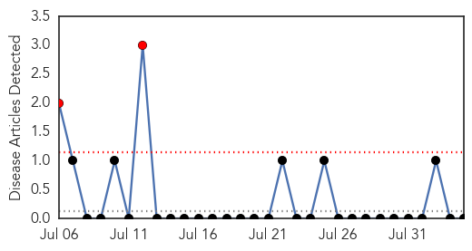
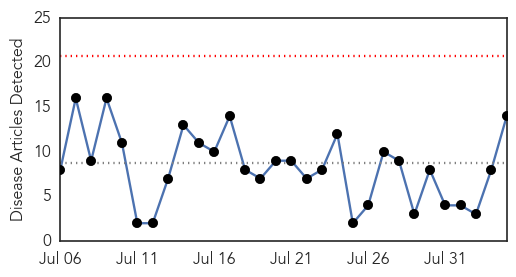
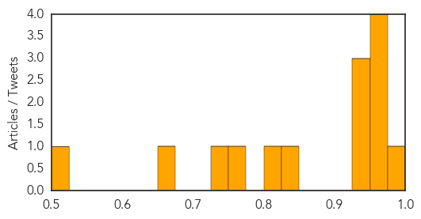

Hemmorhagic Fever
30-Day Web Trend
2 alerts, 0 warnings

30-Day Twitter Trend
0 alerts, 0 warnings

Article Locations

Article Confidences

Top Articles:
-
No articles found for Aug 04, 2015
Top Tweets:
-
No tweets found for Aug 04, 2015
Dengue Fever
30-Day Web Trend
0 alerts, 0 warnings

30-Day Twitter Trend
0 alerts, 0 warnings

Article Locations
Article Confidences
Top Articles:
- 0.980
- Mosquito-borne disease epidemic spreads in northern Peru
- 0.974
- China’s ‘mosquito factory’ innovations to combat Dengue Fever
- 0.962
- Read Health News & Articles at TheHealthSite.com
- 0.962
- Penn Researchers Devise New Approach for Making Vaccines for Deadly Diseases
- 0.961
- CDC urges action as dengue cases continue to spread
- 0.941
- Hopes for rapid dengue fever testing in American Samoa
- 0.940
- Dengue fever cases in Tainan rise to new high
- 0.931
- Tainan Enterprises : Dengue fever cases in Tainan rise to new high
- 0.850
- Europe Vector Maps: Invasive Ticks, Mosquitoes & Sand Flies
- 0.806
- Worlds Largest Mosquito Factory Constructed in China to Tackle Dengue Fever
- 0.752
- BJP MLA contracts dengue, critical
- 0.726
- 35 dengue cases in city last month, highest for July in past 15 years
- 0.662
- Dengue Vaccine Shows Efficacy In Thai Clinical Trial: Sanofi Pasteur
- 0.522
- Dengue larvae found at Yum restaurant
Top Tweets:
-
No tweets found for Aug 04, 2015